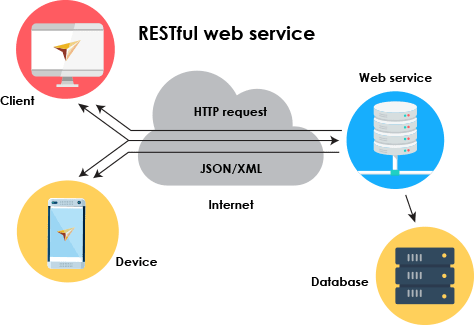

Compléments info, CM2
Les webservices
Pépin Rémi, Ensai, 2022
remi.pepin@ensai.fr
Le plan
- Rappels
- Separation of concern
- API
-
Webservice
- Définition
- Exemples
- Architecture microservices
-
Hyper Text Trasfer Protocol
- Définition
- Exemples
Question ?
Rappel de la semaine dernière
Il y a pas longtemps, dans une galaxie pas vraiment lointaine ...
Plus sérieusement

Séparation en couche
- Chaque couche s'occupe d'une macro tâche
- Une couche communique seulement avec les couches adjacentes
L'étape d'après
Décomposer une couche en modulesExemples
Site de e-commerce
- Module authentification
- Module gestion de compte
- Module paiement
- Module de recherche
- Module analyse des données
- Module panier
Application Programming Interface (API)
API définition
API définition
Termes assez vaste qui recouvre :
- Les bibliothèques / framework : Pandas, Scikit learn
- Des webservices
- Un moyen d'accéder aux ressources d'un hardware : Nvidia API
API in a nutshell
- Expose des méthodes/fonctions aux utilisateurs
- Réutilisation
- Contractualisation des inputs/outputs
- Boîte noire
Une API particulière, les webservices
It's question time !! YEAAAAHHHH
À votre avis, Twitter permet-il à tout le monde d'accéder à leurs bases de données directement ?Wait what ?!
Pourtant tout le monde utilisent les données twitter !
Comment font-ils ?
Des idées ?
Solution : web scraper
Consiste à écrire une application qui se connecte à un site, et qui va lire la page pour en tirer des informationsProblèmes
- Crée du traffic artificiel (côté site)
- Chaque changement dans le site casse notre application
- Gérer le javascript 😱😱😱😱
Autre solution : créer un point d'entrée pour les machines
- Accessible depuis le web
- Fait pour les machines
- Contrôle ce que l'on rend accessible
Démo
Les webservices
- Application web
- Accessible via requête HTTP/HTTPS
- Sans interface graphique
- Renvoie des données compréhensibles par les machines (JSON, XML...)
Plusieurs types
- REST : le plus courant, le type que vous allez manipuler, json
- SOAP : plus complet donc plus lourd que le REST, xml
- RPC : Remote Procedure Call
Comme un site web, mais pour les machines 🤖
Exemple
Le traffic à Rennes en temps réelArchitecture microservices
Site de e-commerce
- WS authentification
- WS gestion de compte
- WS paiement
- WS de recherche
- WS analyse des données
- WS gestion panier
Architecture microservices
Chaque module est un webservice indépendant, et c'est l'application côté client qui va les contacterComment ça fonctionne ?
La notion de client-serveur
- LE MODÈLE QUI RÉGIT LE WEB
- Des machines qui attendent des demandes : serveurs
- Des machines qui font des demandes : clients
- Le client initie le contact, le serveur répond
Comparaison avec vie réelle
- Vous marchez dans la rue et vous avez envie d'un café frappé Double shot espresso and Cream
- Vous rentrez dans un Starbucks et demandez votre café
- Le serveur traite votre demande et vous donne votre café
- Vous partez avec votre café
Communication client-serveur
Mon pc connaît-il www.google.com ?

NON !
Comparaison avec vie réelle
Vous rentrez dans un taxi et demandez d'allez chez Rémi Pépin
Deux options :
- Il vous ammène chez moi directement 🤨
- Il vous demande mon adresse 😀
Nom de domaine, IP, DNS, port
- Nom de domaine : nom "human friendly"
- Adresse IP : adresse de la machine sur internet
- DNS : serveurs qui font la lien entre nom de domaine et IP
- Port : canal de communication, identifie le type de communication
Pour résumer
- Client : initie une communication
- Serveur : répond aux clients
- Ne connaissent que les adresses IP
- DNS : nom de domaine -> IP
- Plusieurs ports chacun avec un type de comunication associée par défaut.
- Communique via HTTP
Des questions ?
Hyper Text Transfer Protocol (HTTP)
HTTP
Protocole de communication client-serveur développé pour le World Wide Web
N'est pas le seul FTP, SMTP, IRC ...
Il existe des protocoles non client-serveur : BitTorrent
Avez vous une idée de requête HTTP ?
Avez vous une idée de requête HTTP ?
Demander une page web via votre navigateur crée une requête HTTP
Les éléments d'une requête
- La localisation de la ressource : URL (nom de domaine + chemin)
- La méthode employée (GET, POST, UPDATE, DELETE ...)
- Les paramètres de la requête
- Le corps de la requête
Les éléments d'une requête
GET https://pokeapi.co/api/v2/pokemon?limit=10&offset=200Pas de corps
Démo
Les méthodes HTTP
- POST
- GET
- UPDATE
- DELETE
Exemple
http://web-services.domensai.ecole/attack
- GET : récupérer toutes les attaques
- POST : ajouter une attaque
- UPDATE : modifier une attaque en ajoutant son id en paramètre
- DELETE : supprimer une attaque en ajoutant son id en paramètre
Pour résumer
- Le HTTP est le protocole du web
- Méthode
- URL
- Paramètres dans URL ou corps
Contacter/réaliser un webservice
Contacter un webservice
Un outil : un client HTTP
- Un navigateur web (assez limité)
- Insomnia/Postman
- Vscode avec des plugins
- Python avec le plugin
requests
Contacter un webservice en python
import requests
url = "https://data.rennesmetropole.fr/api/records/1.0/search/"
params = {"dataset":"etat-du-trafic-en-temps-reel"}
res = requests.get(url=url
,params=params )
print(res.json())
print(res.json()["parameters"]["rows"])
Contacter un webservice en python
def get_rules():
url_rule = "https://api.twitter.com/2/tweets/search/stream/rules"
response = requests.get(
url_rule, headers=bearer_oauth()
)
if response.status_code != 200:
raise Exception(
"Cannot get rules (HTTP {}): {}".format(response.status_code, response.text)
)
print(json.dumps(response.json()))
return response.json()
Contacter un webservice en python
def delete_all_rules(rules):
if rules is None or "data" not in rules:
return None
ids = list(map(lambda rule: rule["id"], rules["data"]))
payload = {"delete": {"ids": ids}}
response = requests.post(
"https://api.twitter.com/2/tweets/search/stream/rules",
headers=bearer_oauth(),
json=payload
)
if response.status_code != 200:
raise Exception(
"Cannot delete rules (HTTP {}): {}".format(
response.status_code, response.text
)
)
print(json.dumps(response.json()))
Contacter un webservice en python
- Très facile
res.json()retourne un dictionnaireget()peux devenirpost()put()etc- Attention à la gestion de l'authentification
Réaliser un webservice en python
- Peut sembler complexe 😵
- Mais il existe des outils pour nous aider 😎
- Pas besoin d'être un expert de l'informatique ! 🐱💻
3 frameworks
- FlaskRESTful : mature, leger, flexible
- Django : mature, robuste, complète
- FastApi : jeune, leger, moderne
FastApi : les bases
from fastapi import FastAPI
app = FastAPI()
@app.get("/")
async def root():
return {"message": "Hello World"}
if __name__ == "__main__":
uvicorn.run(app, host="0.0.0.0", port=8000)
FastApi
- Il est facile de coder vos endpoints
- La documentation est extrêmement bien faite
- Vous vous concentrez sur l'essentiel